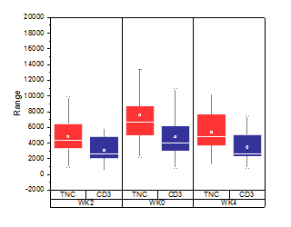
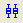
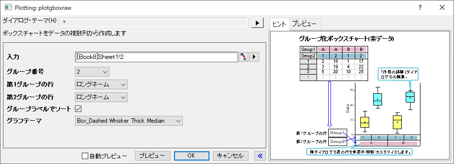
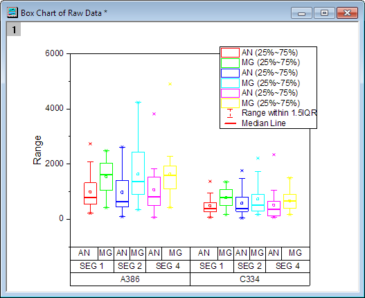

グループ化ボックスチャート - 素データ
GroupedBoxCharts-RawData
注意! 「グループ化ボックスチャート素データ」というタイトル表示は、先に表示された「グループボックスチャート素データ」よりも優先されます。

要求されるデータ
グラフはワークシート列から作成され、1つ以上の列ラベル行でグループ化してある必要があります。
グラフ作成
データを選択します。
メニューから を選択します。
または、
2D グラフツールバーのグループ化したボックスチャート‐素データボタンをクリックします。
plotgboxraw ダイアログではグループ番号と各グループの元となるデータを指定し、素データからグループ化ボックスチャートを作成します。このダイアログはplotgboxraw Xファンクションを使用します。
ボックスチャートの作成とカスタマイズについての詳細はボックスチャートの作成ページをご覧下さい。
plotgboxrawダイアログボックス

| 入力 |
このダイアログは入力データを指定するのに使用します。 |
| グループ番号 |
使用するグループ範囲の数を指定する0(グループ化なし)から5までの整数を入力できます。 |
| 第nグループの行 |
グループ化変数を列ラベル行のリストから選択します。入力列は1番目のグループ行でまずはグループ化され、次に2番目でグループ化、というように細かくグループ化していきます。 |
| グループラベルで並べ替え |
グループラベルの昇順や、グループ行の順で階層（ネスト）でプロットを並べます。ワークシートの列は並べ替えしません。 |
| グラフテーマ |
事前登録済のテーマセットを含む、ボックスチャートのテーマリストから選択します。 |
さらに、このダイアログでは作成されるグラフをプレビュー出来ます。
サンプル
 |
- ファイルメニューのサンプルプロジェクトを開くから、チュートリアルデータを選択してサンプルOPJを開きます。プロジェクトエクスプローラで、Grouped Box Plot and Axis Tick Table フォルダを開き、Book3Gワークブックを開きます。
- ワークシートMG.AN のデータは素データで、このシートの各データ列が1つのボックスとしてプロットされるように、グループ化ボックスチャートを作図します。ボックスはロングネーム、コメント、ユーザー定義パラメータ：mashineによってグループ化されます。
- CからN列を選択して、メインメニューから作図：グループ化ボックスチャート-素データを選択し、plotgboxrawダイアログを開きます。
- グループ数を3にし、Machine、コメント、ロングネームを第1グループ行、第2グループ行、第3グループ行として設定します。
- 昇順のチャートにある、グループ/サブグループをソートしたい場合は、グループラベルで並べ替え を選択します。
- グラフテーマとして、Box_Dashed Whisker Thick Medianをセットし、OKボタンをクリックしてグラフを作図します。
- 
Note:
- ボックスのサイズや間隔を調整するには、グラフ上でダブルクリックして作図の詳細を開きます。左のパネルから一番上のプロットデータを選択し（レイヤ属性を選択している場合は、プロット欄を開く）、間隔タブ で調整します。
- ラベルを選択し、キーボードの矢印キーを使用することで、表を含めた目盛ラベルを少しずつ動かすことができます。
|
|
テンプレート
gBox.otp (Originの実行フォルダ内にインストール)
Note
- 1つ以上のグループの数がある場合、X 軸目盛ラベルはデフォルトで表のように表示されます。表示に関してのフォーマットは軸ダイアログの目盛ラベルページにある表ツリーノードから変更できます。
- グループの数が0ではない場合、第1グループ行をベースにしたグループタブのサブグループが有効になり、間隔タブでそれぞれのサブグループ間の間隔を設定できます。
- ボックスチャートの内容に適した凡例は作成/編集できます。これには、ボックスチャートがアクティブな状態でグラフ操作:凡例：ボックスチャートの内容とメニューから操作します。
- また、素データからグループ化ボックスチャートを作成する事も可能です。
- グラフテーマとしてBox_Column Scatterを選択すると、グループ化した列の散布図を作図できます。
- グラフテーマとして、Box_Connect Mean Lineを選択すると、平均値接続線付きのグループ化ボックスチャートを作成できます。
- グラフテーマとしてBox_Interval Plotを選択すると、グループ化したインターバルグラフを作図できます。